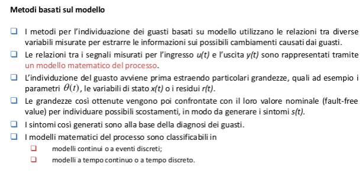

guasti additivi, per i quali il cambiamento subito dalla variabile ad opera del fault, y ( t ) , è indipendente da ogni altro segnale;
guasti moltiplicativi, per i quali il cambiamento subito dalla variabile ad opera del fault dipende dall’ingresso.

Modelli teorici e sperimentali: